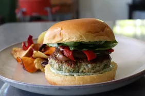

Description
A burger is a popular and classic fast-food item that has become a beloved staple in many cultures around the world. It typically consists of a grilled or fried patty made from ground meat, usually beef, but variations using other meats or plant-based ingredients are also common. The patty is served inside a sliced bun, which acts as the "sandwich" for holding the fillings together.
The classic beef burger is a delightful creation that brings together the perfect blend of flavors and textures. At its core is a juicy and flavorful beef patty, expertly seasoned to enhance its taste. The patty is usually cooked to your preferred level of doneness, from medium-rare to well-done, offering a wide range of choices to suit individual tastes.
Ingredients
- Ground Beef: Choose high-quality ground beef with a sufficient fat content to ensure juiciness and flavor. 80% lean to 20% fat ratio is commonly used.
- Burger Buns: Soft hamburger buns are ideal, but you can use brioche buns or any other type you prefer.
- Tomato: Ripe tomato slices bring juiciness and a burst of acidity.
- Onion: Thinly sliced onions, whether raw or grilled, provide a hint of sharpness and sweetness
- Avocado: Slices of ripe avocado bring a creamy and buttery texture.
- Mushrooms: Sautéed mushrooms offer earthy and savory notes.
- Bacon: Crispy bacon strips provide a savory and smoky flavor.
- Cheese: Choose your favorite cheese to melt over the patty. Common choices include cheddar, American, Swiss, or pepper jack.
Steps
- Preheat Grill or Skillet: Preheat your grill or skillet over medium-high heat. This ensures a hot cooking surface for the burger patties.
- Season the Ground Beef: In a mixing bowl, season the ground beef with salt and pepper. You can also add other desired seasonings like garlic powder, onion powder, or Worcestershire sauce for extra flavor.
- Shape the Burger Patties: Divide the seasoned ground beef into equal portions and shape them into patties. Flatten each patty to your preferred thickness. Make a slight indentation in the center of each patty to prevent it from puffing up during cooking.
- Cook the Burger Patties: Place the burger patties on the hot grill or skillet. Cook for about 4-5 minutes per side, or until the desired level of doneness is reached. For a medium-rare burger, cook for about 4 minutes per side; adjust the cooking time to your preference.
- Toast the Burger Buns: While the burger patties are cooking, lightly toast the burger buns on the grill or in a separate skillet. This adds a nice crispiness to the buns and prevents them from becoming soggy from the condiments.
- Add Cheese (Optional): If you want cheese on your burgers, add a slice of cheese to each patty about 1 minute before the burgers are done cooking. Cover the grill or skillet with a lid to allow the cheese to melt.
- Prepare the Burger Toppings: Wash and prepare the lettuce, tomato slices, thinly sliced onions, pickles, and any other desired toppings.
- Assemble the Burgers: Take the toasted burger buns and start assembling the burgers. Place a cooked patty with melted cheese (if using) on the bottom half of each bun. Add the desired toppings, such as lettuce, tomato slices, onions, and pickles.
- Add Condiments: Spread your favorite condiments, such as ketchup, mustard, and mayonnaise, on the top half of the burger buns.
- Add Optional Ingredients (Optional): If you want to add bacon, a fried egg, sautéed mushrooms, avocado, jalapeños, or any other optional ingredients, now is the time to do so.
- Put It All Together: Place the top half of the bun with condiments over the assembled toppings to complete the burger.
- Serve and Enjoy: Your classic beef burger is now ready to be served! Enjoy it while it's hot, and savor the delicious combination of flavors and textures.